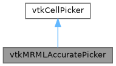

|
Slicer 5.13
Slicer is a multi-platform, free and open source software package for visualization and medical image computing
|
Loading...
Searching...
No Matches
|
Slicer 5.13
Slicer is a multi-platform, free and open source software package for visualization and medical image computing
|
A cell picker that stays fast when large surfaces are shown. More...
#include <Libs/MRML/DisplayableManager/vtkMRMLAccuratePicker.h>


Classes | |
| struct | CachedLocator |
Public Types | |
| typedef vtkCellPicker | Superclass |
Public Member Functions | |
| virtual const char * | GetClassName () |
| virtual vtkIdType | GetMinimumCellCountToIndex () |
| virtual int | IsA (const char *type) |
| int | Pick (double selectionX, double selectionY, double selectionZ, vtkRenderer *renderer) override |
| void | PrintSelf (ostream &os, vtkIndent indent) override |
| virtual void | SetMinimumCellCountToIndex (vtkIdType) |
Static Public Member Functions | |
| static int | IsTypeOf (const char *type) |
| static vtkMRMLAccuratePicker * | New () |
| static vtkMRMLAccuratePicker * | SafeDownCast (vtkObject *o) |
Protected Member Functions | |
| void | UpdateLocators (vtkRenderer *renderer) |
| vtkMRMLAccuratePicker () | |
| ~vtkMRMLAccuratePicker () override | |
Protected Attributes | |
| std::map< vtkPolyData *, CachedLocator > | Locators |
| vtkIdType | MinimumCellCountToIndex { 10000 } |
A cell picker that stays fast when large surfaces are shown.
vtkCellPicker tests every cell of every pickable surface unless a spatial locator is registered for that surface's data. Over a large mesh – for example a segmentation closed surface with millions of cells – an un-indexed pick costs O(number of cells), tens to hundreds of milliseconds, which makes per-mouse-move picking (markup dragging, hover read-out) janky.
vtkMRMLAccuratePicker registers and caches a vtkStaticCellLocator for each large, pickable surface in the renderer before every pick, rebuilding a locator only when its surface changes and dropping it when the surface is no longer shown. Picks then become indexed queries. Everything else behaves exactly like vtkCellPicker (same tolerance, picked position, and normal), so it is a drop-in replacement.
A single instance is meant to be shared per view: vtkMRMLThreeDViewInteractorStyle owns one and exposes it through vtkMRMLInteractionEventData::GetAccuratePicker(), so every widget in the view – and anything else that needs quick localization in world coordinates – reuses one picker and one set of locators.
Definition at line 54 of file vtkMRMLAccuratePicker.h.
| typedef vtkCellPicker vtkMRMLAccuratePicker::Superclass |
Definition at line 58 of file vtkMRMLAccuratePicker.h.
|
protected |
|
overrideprotected |
|
virtual |
|
virtual |
|
virtual |
|
static |
|
static |
|
override |
Refresh the cell locators for the renderer's large surfaces, then pick as vtkCellPicker does.
|
override |
|
static |
|
virtual |
Minimum number of cells for a surface to be indexed with a locator. Smaller surfaces are already cheap to pick by brute force, and building a locator for them would cost more than it saves. Defaults to 10000.
|
protected |
Register a cached locator with this picker for each large, pickable surface currently shown in the renderer (building or rebuilding it only when the surface changes) and drop locators for surfaces no longer shown.
|
protected |
Definition at line 87 of file vtkMRMLAccuratePicker.h.
|
protected |
Definition at line 89 of file vtkMRMLAccuratePicker.h.